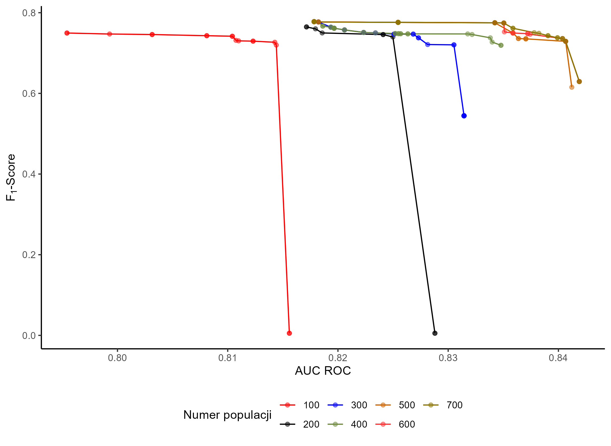
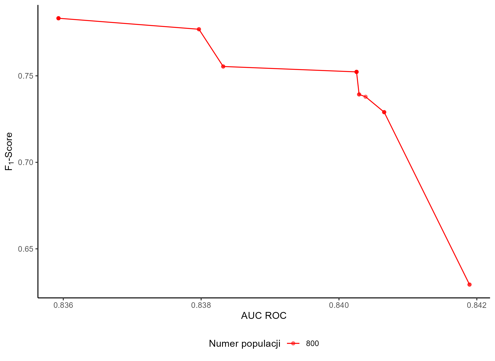
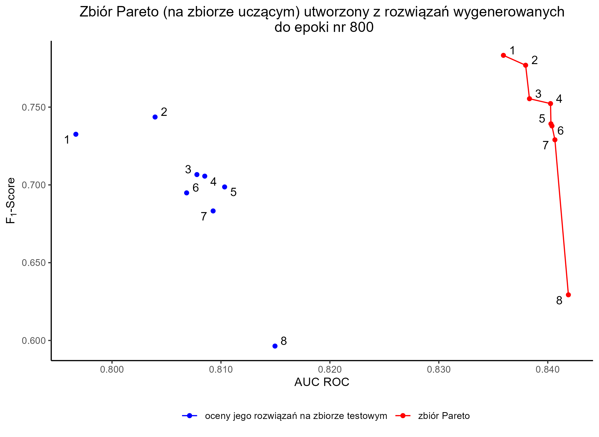
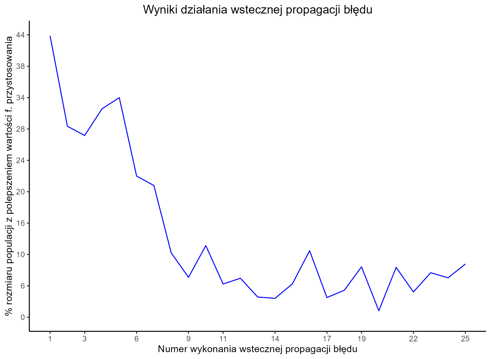
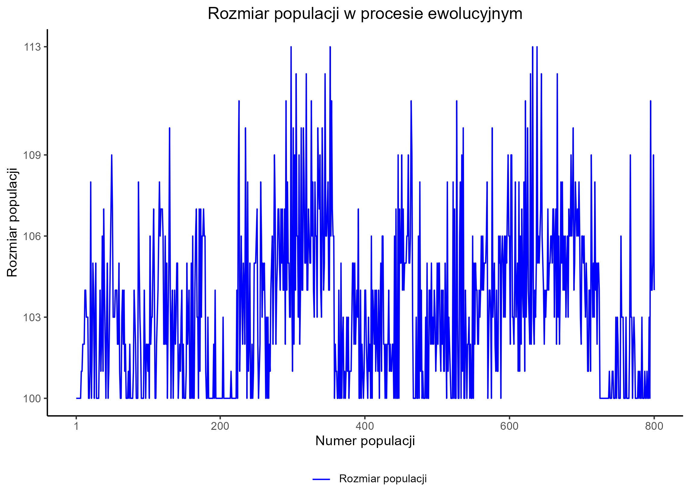
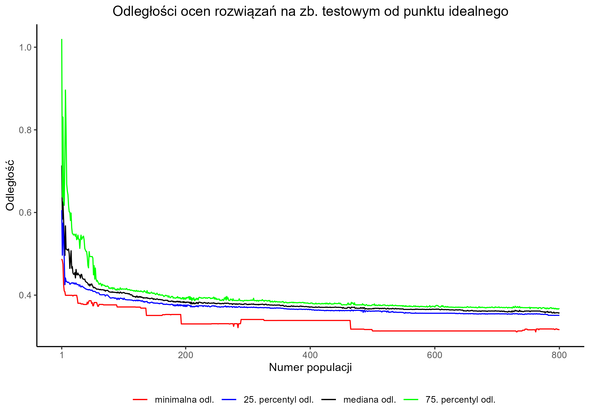

Eksperyment nr 9
Give Me Some Credit
Konfiguracja i wyniki eksperymentu
| Konfiguracja | konfiguracja | ||||||||||||
|---|---|---|---|---|---|---|---|---|---|---|---|---|---|
| Rozdział z rozprawy | Eksperyment niezaprezentowany w rozprawie | ||||||||||||
| Zbiór danych | Give Me Some Credit | ||||||||||||
| liczba obserwacji | zbiór uczący: 1500 zbiór testowy: 500 | ||||||||||||
| Liczba epok | 800 | ||||||||||||
| Kryterium | Ocena wielokryterialna oparta o:
| ||||||||||||
| Ziarno generatora liczb losowych | skrypt przygotowujący dane: 89235 eksperyment: 154456 | ||||||||||||
| Wybrana kompromisowa sieć neuronowa | |||||||||||||
| Epoka uzyskania osobnika | |||||||||||||
| Wizualizacja / opis osobnika | wizualizacja genomu | ||||||||||||
| Oceny | Na zbiorze uczącym
Na zbiorze testowym
|
Rysunki





